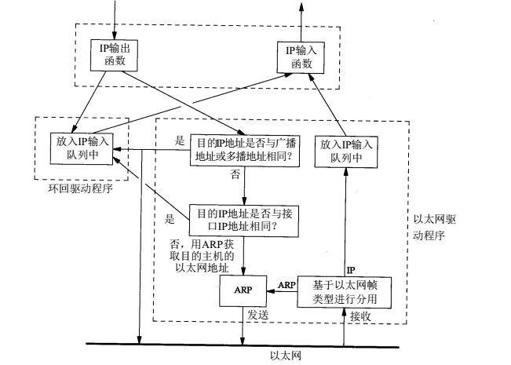

数据链路层概述
- 计算机网络的形成
计算机最初只是孤立的一个运算机器，随着业务需求的不断发展，单台孤立的计算机已经不能够满足我们的需求，因此人们把一个区域内的多台计算机连接成一个网络即局域网，然而这些小的网络并不能满足对计算机日益增长的需求，因此把不同的局域网连接成一个全球性质的网络，我们称之为互联网，互联网就是把不同的局域网通过路由器连接起来的网络。
- 数据链路层的作用
数据链路层的作用，则是将网络层下发的数据包，根据自己所处的网络类型，将其封装成帧数据以后发送给下一跳地址。以ip数据包传输为例，首先ip层通过目标地址，在路由表中找到数据包通往目的需要经过的下一跳ip地址，并传给数据链路层，数据链路层根据ip，通过arp协议找到该ip地址所对应机器的mac地址，最后根据自己所处的网络对应的链路层协议，将数据包封装成帧以后，发给拥有该mac地址的机器。

- 数据包的跨网络传输
假设当前有两个网络，通过路由器连接一个令牌环网和以太网。
令牌环网–路由器–以太网
现在令牌环网的上的一台主机的数据包，要发往以太网上的另一台主机，此时令牌环网上的主机数据包经过应用层，运输层和网络层以后，使用令牌环网专用的协议格式，将数据包分装成帧以后，发给下一跳地址，路由器连接令牌环网的哪个ip，然后路由器经过loopback环回地址，将数据包发往同一设备上的，连接以太网的另一个接口（该接口绑定的是该数据包通往目的节点的下一跳地址），然后数据封装成以太网数据包格式后，发往目标机器。
数据链路层的种类与各自的特点
- 以太网
- 令牌环网
- PPP
- SLIP
环回地址
几乎所有的操作系统，都会有环回地址体系，他的作用是，本机内不同的进程，可以通过TCP/IP协议来进行通信，当数据包到达数据链路层时，如果判断数据包发往本机，则直接发送过去，否则通过ARP协议获取的以太网MAC地址，将数据封装成帧后，发往该MAC地址所属的机器上。

ARP和RARP协议
- ARP协议的作用就是，在一个局域网内，当一台主机要查找某个IP所对应机器的MAC地址时，会向局域网内所有的机器广播这个请求，并捎带自己的MAC地址，当其查找的机器，收到该数据包时，会记录请求机器的ip和mac地址，并将自己的mac地址和ip返回给请求者，这就是ARP协议做的事情，本质上是通过ip去查找mac地址。
- RARP的作用是，将mac地址转换成ip地址
MTU与路径MTU
- 数据链路层协议中，单个数据帧的数据部分有最大和最小传输大小的限制（一般是46~1500个字节）
- 不同的数据链路层协议该限制不相同
- 数据包经过的路由路径中，最小的MTU被称之为路径MTU，他将作为单个数据链路层数据帧数据部分的大小，以保证该路由路径上，数据包能够送达目的地。